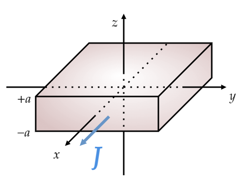
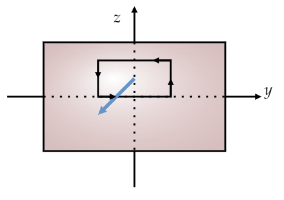

A thick slab extending from $z=-a $ to $z=+a $ (and infinite in the $x $ and $y $ directions) carries a uniform volume current $\mathbf{J}=J\hat{\mathbf{x}} $ (Fig. 5.40).
Find the magnetic field, as a function of $z $, both inside and outside the slab.
Place a rectangular amperian loop parallel to the $yz $-plane, with one side satisfying $z=0 $ (at this point, $B=0 $).
Then we have
\begin{align*} \oint \mathbf{B}\cdot d\mathbf{l} &= \mu _0I_{\text{enc} } \\ B\cdot l &= \mu _0\cdot J\cdot (\text{area} )\\ Bl &= \mu _0 Jzl\\ B &= \mu _0 Jz \end{align*}Or in vector form:
\[\mathbf{B}=-\mu _0 Jz \hat{y} \tag{$-a < z < a $}\]If you don't know why it points in the $\hat{\mathbf{y}} $ direction, read the discussion presented in Example 5.8.
If $z>a $, then $I_{\text{enc} } $ is $\mu _0 laJ $, giving: \[\mathbf{B}=- \mu _0 Ja \hat{\mathbf{y}}\tag{For $z> a $} \] And opposite if $z<-a $.